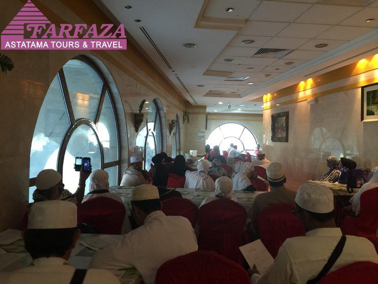
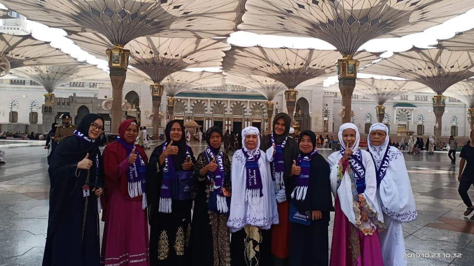
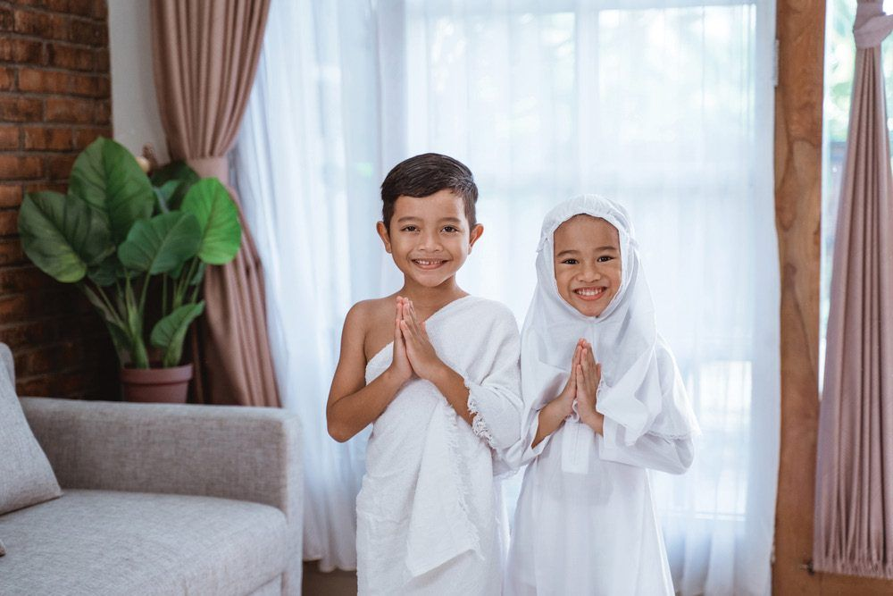

Salam
Harga terbaik
Hotel bintang 3 terdekat dari Masjid Nabawi dan Masjidil Haram. Layanan berstandar baik untuk semua kalangan.
Program umroh
Keberangkatan setiap bulan, pesawat direct, dan pembimbing berkualifikasi.
Program umroh
Program 9 atau 12 hari dengan keberangkatan setiap bulan dan penerbangan langsung dari Jakarta. Semua program: pilihan kamar quad, triple, atau double, asuransi perjalanan, perlengkapan umroh, dan dokumentasi gratis.
Harga terbaik
Hotel bintang 3 terdekat dari Masjid Nabawi dan Masjidil Haram. Layanan berstandar baik untuk semua kalangan.
Fasilitas terbaik
Hotel bintang 4 dan 5 di lokasi strategis dekat kedua masjid, dengan penerbangan full service.
Fasilitas spesial
Kelas premium setara VIP untuk ibadah yang lebih tenang, nyaman, dan terorganisir.
Bersama keluarga
Harga khusus anak hingga usia 7 tahun, dengan pengaturan kursi dan tempat tidur sesuai usia.
Jadwal, harga, dan hotel mengikuti program yang berlaku, serta dapat berubah mengikuti ketentuan maskapai dan pemerintah. Tanyakan rincian terbaru melalui WhatsApp Farfaza.



Jadwal yang tersedia
Empat jadwal sudah dibuka. Pilih paket, lalu amankan kursi Anda lewat WhatsApp. Harga disampaikan melalui WhatsApp.
Akhir tahun, sujud di Tanah Suci.
Paket Lengkap atau Umrah Mandiri. Harga melalui WhatsApp.
Amankan kursi via WhatsAppBerangkat 8 Februari 2027. Rasakan hari-hari awal Ramadan di Tanah Suci.
Paket Lengkap atau Umrah Mandiri. Harga melalui WhatsApp.
Amankan kursi via WhatsAppPas libur sekolah, bisa berangkat bareng keluarga.
Paket Lengkap atau Umrah Mandiri. Harga melalui WhatsApp.
Amankan kursi via WhatsAppProgram 12 hari, dapat 2x Jumat di Tanah Suci.
Paket Lengkap atau Umrah Mandiri. Harga melalui WhatsApp.
Amankan kursi via WhatsApp*Nama hotel dan maskapai sewaktu-waktu dapat berubah tanpa mengurangi fasilitas. Jadwal mengikuti ketentuan maskapai dan Pemerintah Arab Saudi.
Dua cara berangkat
Untuk umrah pertama, bersama orang tua, atau bersama keluarga. Termasuk tiket pesawat pulang pergi, hotel Makkah dan Madinah, visa, asuransi, makan tiga kali sehari, bus AC rombongan, city tour, pendampingan Raudah, muthawwif, manasik, dan perlengkapan.
Untuk jamaah yang ingin mengatur perjalanan sendiri. Termasuk hotel Makkah dan Madinah fullboard, tim bandara, dan bantuan check-in hotel. Tambahan opsional: transportasi, kereta, city tour, dan muthawwif. Tiket pesawat dan visa diurus sendiri.
Cara kerja
Data jamaah dan visa terdaftar di SISKOPATUH, dan visa diurus melalui jalur resmi. Informasi harga disampaikan melalui mitra resmi atau tim Farfaza.
Tim Farfaza membantu memilih program, bulan keberangkatan, dan tipe kamar yang sesuai.